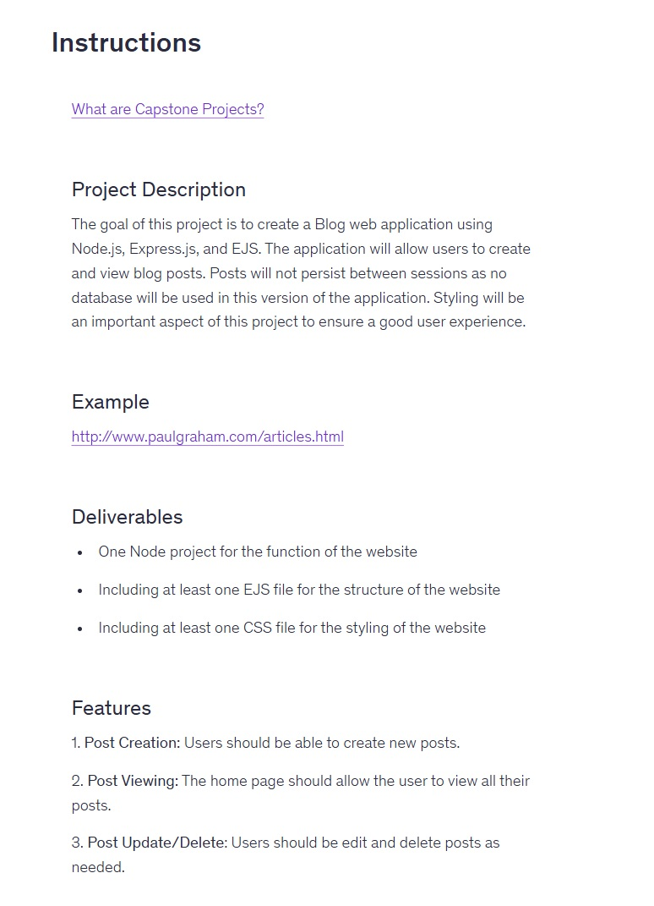
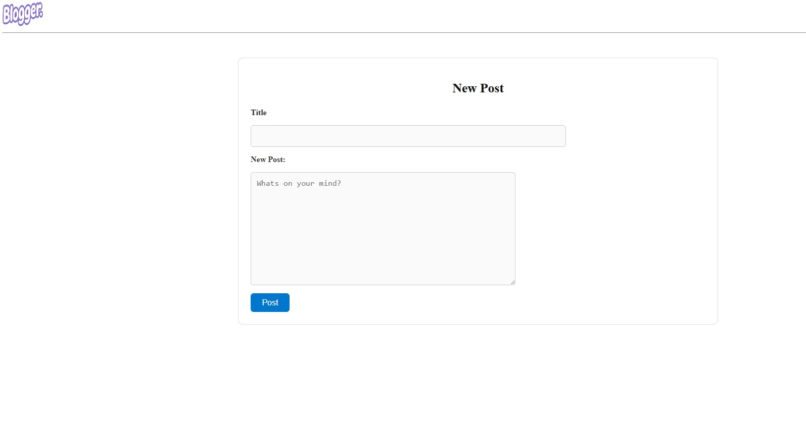
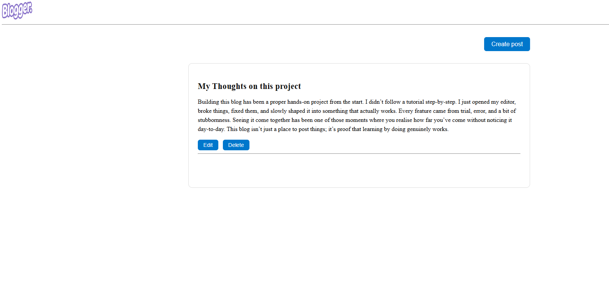

As one of my course challenges, I had to build a non‑persistent blog app using Node.js, Express and EJS templating. I was given the final project requirements and then left to get on with it. No guidance, no hints, just “here’s what it needs to do.”
Getting the editing and deleting routes working properly was the toughest part. There were plenty of moments where things broke, didn’t update, or behaved in ways I didn’t expect. After a lot of trial and error (and a few moments where I wanted to quit), I finally got everything working the way it should.
The flow is simple: when a user clicks the New Post button, they’re taken to a page where they can write their post. Once they submit it, the server stores their input in an array and displays the post on the homepage.
The Edit route sends the user back to the posting page, pre-fills the textboxes with the existing data, and lets them update and save their changes.
The Delete route finds the post in the array and removes it, instantly updating the homepage.

Instructions provided by Udemy.

The homepage will show user posts here.

Users input their data into the fields, once saved the data is stored in an array.

The data handled by the server is shown on the homepage